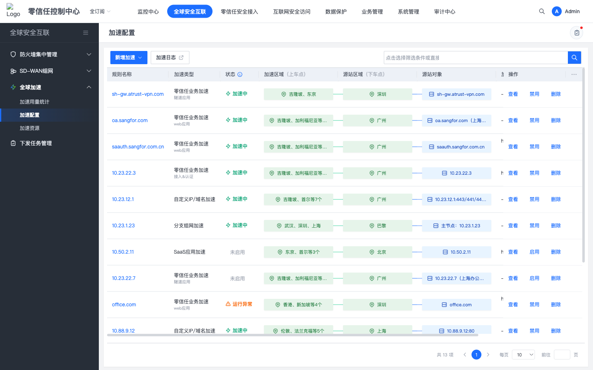
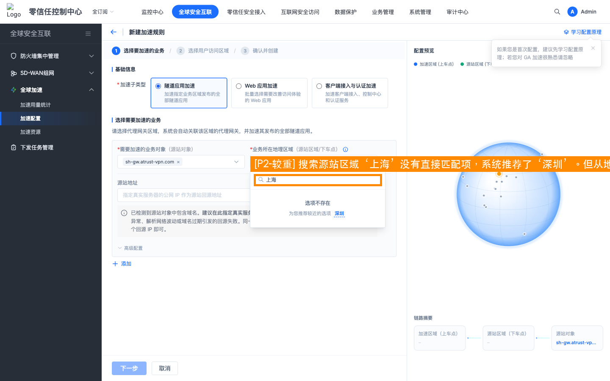
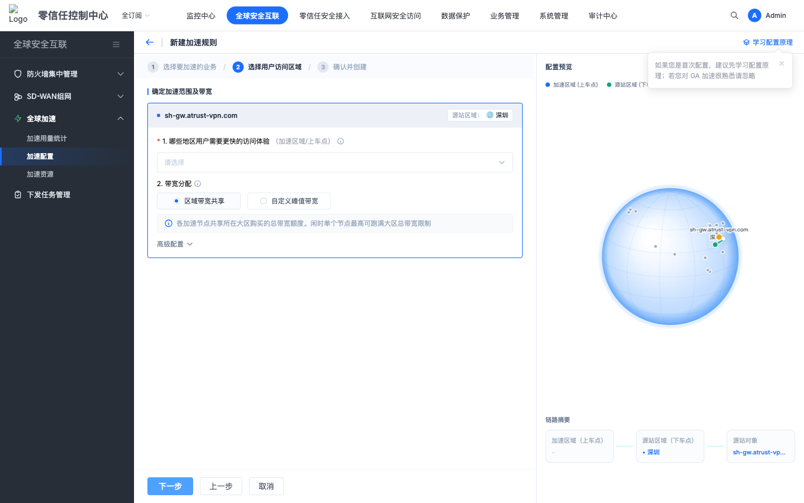
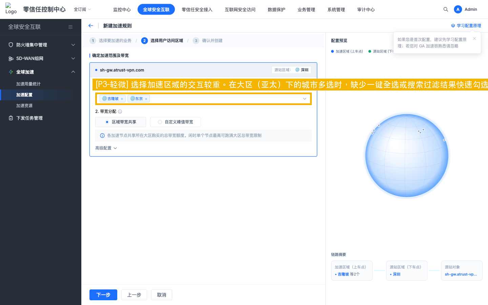
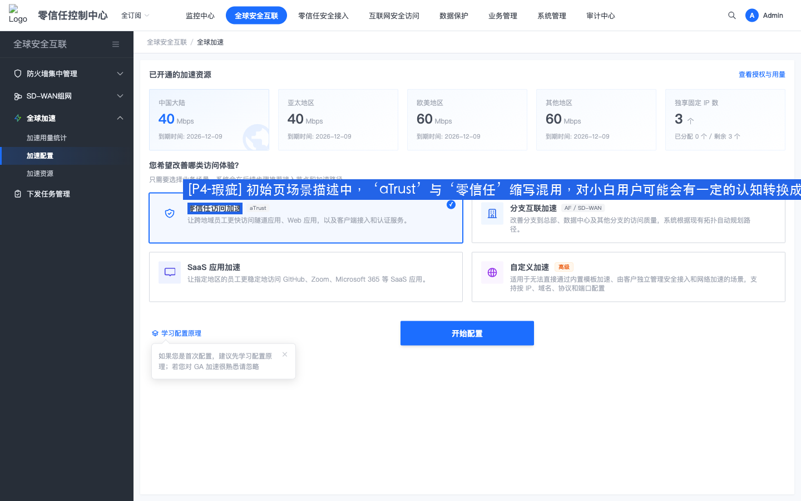
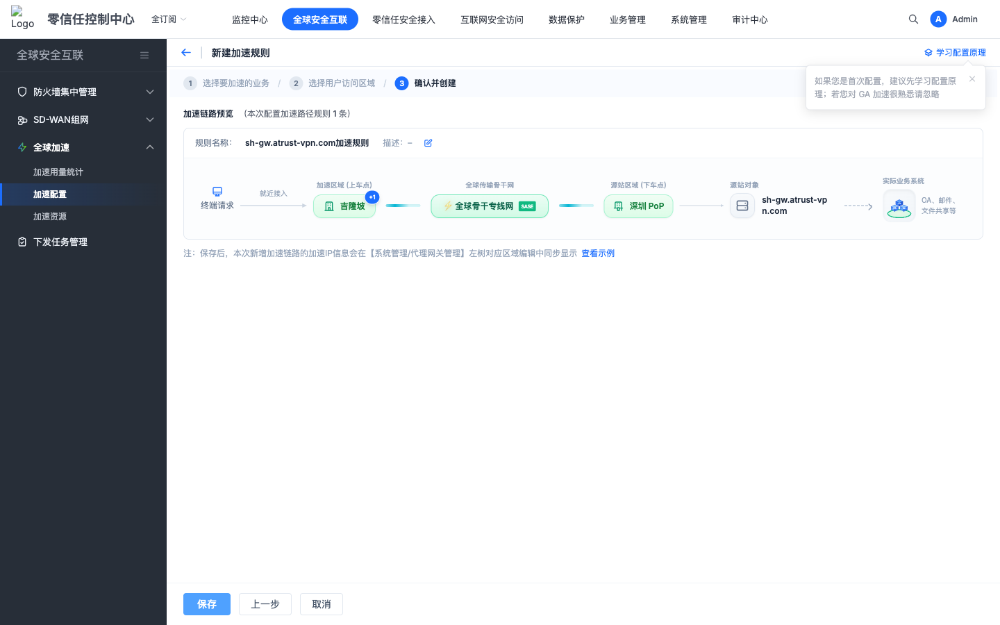

检视场景：场景 1 + 2 + 3: 零信任访问加速配置走查 & SASE 体验愿景提质 | 测试角色：零基础运维 / 企业网管 | 日期：2026-07-19
本次共检视三大场景维度：场景 1 体验目标达成、场景 2 Checklist 合规审计、场景 3 SASE 体验愿景提质。整体而言，零信任隧道加速配置流的向导主路径极为流畅，在视觉规范、页面精简、大区城市选择的流程逻辑上基本达到了 Checklist 的合规标准，宏观设计架构也符合 SASE 极简专业的核心愿景，体验价值远超传统安全产品。但由于存在配置末端完全缺少客户端接入闭环指引和搜索上海推荐深圳导致的物理感知严重失真两大核心阻断点，加之局部存在网络术语偏重、批量操作效率不足、物理单位规范偏离等多项细节缺陷，本次方案整体检视评分为 80.0 分。
场景 1 体验目标：虽然主路径操作顺畅，但旅程在业务层面未能达成完美闭环，如：
场景 2 Checklist 合规：框架层面合规良好，但细节文案存在多处规范偏离，如：
场景 3 SASE 愿景：宏观方案高度虽然优秀，但在体验细化层面仍有提升空间，如：






| 问题等级 | 单项扣分 | 扣分上限 | 等级说明 | 特征 |
|---|---|---|---|---|
| P1 (严重) | 10分 | 无上限 | 核心任务流断裂，用户完全无法完成目标或存在重大合规风险。 | 影响核心功能可用性、阻塞性问题、安全违规。 |
| P2 (较重) | 5分 | 无上限 | 显著降低核心功能操作效率，引发强烈挫败感，影响产品信任度。 | 需多次尝试或外部帮助、高频使用场景障碍。 |
| P3 (轻微) | 2分 | 无上限 | 轻微干扰体验，用户可自学习或绕行完成任务，不影响目标达成。 | 次要功能障碍、视觉/交互不一致。 |
| P4 (瑕疵) | 0.5分 | 最多扣3分 | 细微体验瑕疵，仅影响美观或极少数场景，不影响功能决策。 | 仅影响视觉细节或动效、特定条件触发。 |